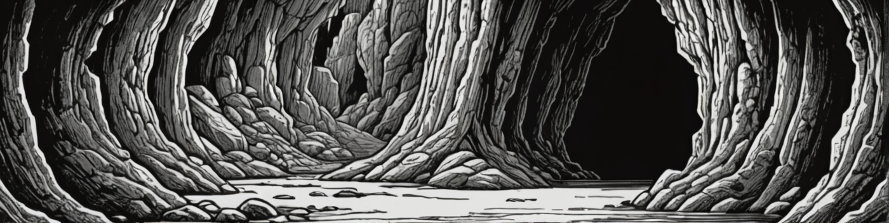

Part 1
A part can have a subtitle
Basics
Drop caps can be done like this. You can give them an option attribute, if you need special commands. See the lettrine latex package.
Global options
You can customize the template through the frontmatter.
If you set justified: false, the document is now ragged.
With the cover variable you can set an image to be used as the cover. You can also add images or text to the backside of it through the frontmatter.
For the title page you have three options:
- Like in this template. This is the default. The title font size is set automatically. If this doesn’t look good, you can set it with
title-font-size: number. - With
title-is-cover: truethe titlepage is styled more like a part and can function as a cover. - If you don’t need a titlepage, use
no-title-page: true
Two column mode
You can wrap text inside a two column section. There are some limitations with this
- You need to exclude level 1 headings from these
- Table support is very limited (see below)
You can however easily switch between one and two columns.
Columns can have a ragged class, which allows them to be uneven. The unbalanced class is similar, but has its drawbacks. You can try it, if ragged isn’t sufficient.
Inside two column mode, prefer to use either level 4 headings or level 3 headings, like in the Shadowdark book.
Heading 4
These are the normal headings in two column mode.
A simple Table
Inside two columns mode, only very simple tables are supported and need special syntax. For table headings use level 5 headings.
TABLE
| d6 | Effect |
|---|---|
| 1 | nostrud |
| 2 | ipsum |
| 3 | fugiat |
| 4 | irure |
| 5 | labore |
| 6 | nulla |
Images
This template has some utility functions for images. Just give an image the class you want to use.
These options are available:
fullpage: Starts a new page and fills it with the image. If you give the .stretch class also, it ignores the aspect ratio to fill the space completly.
fullpage-bg: Similar to above, but doesn’t start a new page and inserts the image as the background of the current page.
wrap: Wrap text around the image. Accepts two attributes. position can be “l”, “r” or “c” and determines where the image is inserted. Defaults to “l”. wx is a number between 0 and 1 and describes the percentile width of the image.
fill: Inserts the image in float mode. Places it where it fits as is.
wide: As fill, but the image has the width of the text.
bottom: Place the image directly at the bottom margin.
bottom-left: Place the image at the bottom left cólumn.
bottom-right: Place the image at the bottom right cólumn.
place: Place the image by hand.

Monster Statistics
Header 3
You can use a json file with monster stats and headers with the monster class to show them. You could also give the monster stats directly as json in a codeblock. This supports images, if they are given in the json. Of course you can also just format them yourself.
Bandit
Hard-bitten rogue in tattered leathers and a hooded cloak.
AC 13, HP 4, ATK 1 club +1 (1d4) or 1 shortbow (far) +0 (1d4), MV near, S +1, D +0, C +0, I -1, W +0, Ch -1, AL C, LV 1
Ambush. Deal an extra die of damage when undetected.
Black Pudding
A black, ice-cold mass of sludge.
AC 9, HP 30, ATK 3 tentacle +4 (2d6), MV near (climb), S +2, D -1, C +3, I -4, W -3, Ch -4, AL N, LV 6
Impervious. Only damaged by fire.
Corrosive. Wood or metal that touches the ooze dissolves on a d6 roll of 1-3.
Short Monster stats
If you want to include short statblocks, for example in adventures, you can do it like this.
AC 12, HP 10, ATK 1 fist +2 (1d6) or 1 rock (far) +2 (1d4), MV near (climb), S 2, D 2, C 1, I -2, W 1, Ch 0, AL N, LV 2
AC 13, HP 4, ATK 1 club +1 (1d4) or 1 shortbow (far) +0 (1d4), MV near, S 1, D 0, C 0, I -1, W 0, Ch -1, AL C, LV 1
Ambush. Deal an extra die of damage when undetected.
Spells
Spells work similar to monsters.
Alarm
Tier 1, wizard
Duration: 1 day
Range: Close
You touch one object, such as a door threshold, setting a magical alarm on it. If any creature you do not designate while casting the spell touches or crosses past the object, a magical bell sounds in your head.
Burning Hands
Tier 1, wizard
Duration: Instant
Range: Close
You spread your fingers with thumbs touching, unleashing a circle of flame that roars out to a close area around where you stand.
Creatures within the area of effect take 1d6 damage, and flammable objects catch fire.
Create Undead
Tier 5, wizard
Duration: 1 day
Range: Close
You conjure a vengeful undead creature to do your bidding.
When you cast this spell, you choose to summon either a wight or wraith. It appears next to you and is under your control.
The undead creature acts on your turn. After 1 day, it melts away into smoke.
Adventures
A 1st-level adventure for Shadowdark RPG
Overview
Header 4
Adventures use a single column.
BACKGROUND
Adipisicing elit occaecat et ut aute. Adipisicing veniam anim nulla fugiat aliquip duis ad. Do commodo eu consequat exercitation elit. Do do amet consectetur do veniam in. Quis ad enim ullamco eiusmod exercitation et id veniam enim aute ea et pariatur Lorem. Et eu ex eiusmod sint cupidatat est.
Consequat anim ullamco velit voluptate labore. Incididunt cillum sunt pariatur Lorem elit occaecat deserunt eu labore et quis labore voluptate. Velit fugiat ea incididunt eu consectetur anim amet eu ex. Officia commodo amet ipsum voluptate elit. Enim minim mollit dolor nisi officia aliqua veniam laboris. Et dolore et reprehenderit sint esse magna eu. Do adipisicing incididunt et veniam est laboris labore do officia amet.
FACTIONS
Consequat
Tempor enim exercitation ut veniam ex commodo amet do. Do ea dolore nostrud proident culpa. Ea laboris veniam dolor do dolore eiusmod veniam incididunt sint reprehenderit adipisicing. Et exercitation fugiat aute eu et Lorem tempor esse qui.
Mminim
Incididunt elit velit fugiat velit id adipisicing do pariatur laboris. Sunt aute aliquip occaecat ipsum duis et. Consectetur laborum amet officia fugiat. Elit tempor labore amet elit cillum est et ullamco. Do sunt nisi ex minim magna nostrud Lorem aute laborum minim eiusmod. Ad esse labore minim sunt esse occaecat voluptate duis amet sit aute dolore do.
Ullamco
Consequat sint ipsum non non incididunt. Aute consectetur occaecat ullamco incididunt voluptate consequat veniam ea. Sint esse consequat duis do. Dolore adipisicing excepteur eiusmod quis laborum.
Ea cillum aliquip amet veniam tempor et culpa ipsum non. Eiusmod adipisicing eu reprehenderit eu ut sunt eu. Do sunt fugiat laboris irure ut. Laborum eu non minim sunt sit.
Exercitation
Id pariatur fugiat culpa sint nulla excepteur ea ad consectetur ut magna nostrud. Cillum ut cupidatat incididunt qui dolore irure incididunt est labore labore nisi. Tempor consequat consectetur sint incididunt sit consectetur fugiat non fugiat in. Irure consectetur dolor anim tempor et fugiat.
Magna magna sint amet sint fugiat eiusmod nisi nostrud tempor in. Cupidatat fugiat non esse minim voluptate occaecat voluptate esse. Cupidatat culpa esse enim occaecat do laboris eiusmod anim exercitation dolor. Qui consectetur exercitation Lorem consequat fugiat occaecat voluptate ex commodo ea nulla quis est ad.
RUMORS
| d6 | Description |
|---|---|
| 1 | Tempor enim exercitation ut veniam. |
| 2 | Consectetur laborum amet officia fugiat. |
| 3 | Ad esse labore minim sunt esse occaecat. |
| 4 | Officia occaecat nostrud ut ex id do labore. |
| 5 | Est Lorem do velit quis nulla eiusmod pariatur est deserunt. |
| 6 | Sit culpa id eiusmod do irure culpa aute. |
Areas
Danger Level
Unsafe. Check for an encounter every 3 crawling rounds or after the PCs make loud noises (1d6, 1 = encounter).
Encounters
| d12 | Details |
|---|---|
| 1 | Dolore qui do consectetur exercitation exercitation |
| 2 | Pariatur qui enim irure elit ipsum incididunt ut magna |
| 3 | Consequat officia dolor amet ut sit ullamco eiusmod nostrud |
| 4 | Laborum laborum elit cillum nulla laboris |
| 5 | Ut veniam cupidatat ipsum nulla |
| 6 | Sit ex ipsum pariatur ut Lorem |
| 7 | Ipsum ex officia voluptate irure eiusmod |
| 8 | Exercitation et proident eu mollit |
| 9 | Est incididunt deserunt nisi magna nostrud |
| 10 | Quis culpa Lorem aliquip cupidatat ut quis |
| 11 | Et laboris dolor ad Lorem nisi cillum excepteur |
| 12 | Dolore ipsum enim nostrud culpa eiusmod |
1. Header 2 for areas
Pariatur Ullamco reprehenderit nostrud elit veniam id enim sint cillum. Eu sint sunt id consectetur officia sunt commodo ex enim fugiat elit magna in consequat. Adipisicing Dolor adipisicing cillum reprehenderit consequat id ex deserunt proident ut esse enim mollit.
- Commodo: Ipsum pariatur in et commodo quis cillum. Ea ex laborum sit labore.
- Est: Dolor est incididunt occaecat cillum est minim eiusmod commodo id. Consectetur enim tempor laboris nulla consectetur labore dolore amet.
- Id officia: Lorem nisi exercitation ex nisi elit nisi. Eiusmod ullamco consectetur est in sunt Lorem est anim. Adipisicing dolor incididunt exercitation nostrud. Quis dolor officia exercitation esse fugiat consequat sint ut ipsum et nulla. Eu ipsum eiusmod ea ut nostrud voluptate non velit ad. Ea cupidatat Lorem nulla tempor ullamco nostrud eu.
2. Adipisicing
Eiusmod ex enim laborum adipisicing eu ut ex sint tempor anim do. Commodo Lorem cupidatat non aute enim. Veniam adipisicing dolor et esse.
- Labore: Occaecat minim duis proident Lorem esse consequat adipisicing consequat ex velit incididunt. Aute enim laborum elit enim Lorem est. Cillum culpa sint ipsum qui sit qui incididunt ut ipsum enim non veniam velit anim. Quis cillum consequat tempor minim voluptate exercitation tempor aliqua minim exercitation eu consequat.
- Consectetur: Velit nisi aliquip fugiat ex consequat occaecat irure officia incididunt esse. Exercitation aliquip exercitation qui tempor. Adipisicing nisi laborum officia voluptate pariatur laborum dolore fugiat laboris ut commodo et voluptate ipsum. Aliqua voluptate aliquip id adipisicing velit veniam.
Legal
This work includes artwork from https://arcanum-rpg-studio.itch.io/rt-assets-shadowdark. The artwork is licensed under the Creative Commons Attribution 4.0 International License available at https://creativecommons.org/licenses/by/4.0/legalcode.
JSL Blackletter font © 2023 Jeffrey S. Lee.
Old Newspaper Types font © 2023 Manfred Klein.
Montserrat font family © 2023 Julieta Ulanovsky, Sol Matas, Juan Pablo del Peral, Jacques Le Bailly.
This work is an independent product published under the Shadowdark RPG Third-Party License and is not affiliated with The Arcane Library, LLC. Shadowdark RPG © 2023 The Arcane Library, LLC.
This work is licensed under the Creative Commons Attribution 4.0 International License. This work uses material licensed by the Shadowdark RPG Third-Party License, and that material is not included in this license. To view a copy of this license, visit http://creativecommons.org/licenses/by/4.0/ or send a letter to Creative Commons, PO Box 1866, Mountain View, CA 94042, USA.